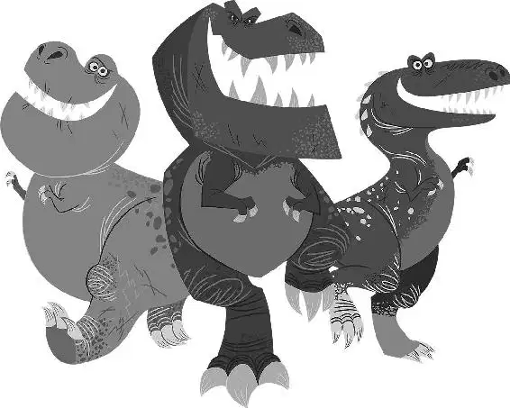

The next morning Arlo woke to Spot running in his sleep, making growling noises, and pounding into Arlo’s nose with his feet. The dinosaur snapped awake and lifted his head away from the barrage of toes and heels. Then Spot woke up; he looked up at Arlo with a big grin. Arlo smiled back.
It was time to start their day. They got up and began walking along the river. Almost out of nowhere, dark clouds appeared and instantly grew darker. The wind picked up and started blowing the leaves off the trees. Soon branches began cracking and whipping through the air. As the wind grew stronger, debris flew toward them, and Arlo started to panic.
BOOM. The booming sound of thunder startled Arlo, causing him to flinch and shudder. He looked at Spot, ahead in the distance, and screamed to him. “We should stop!” But Spot couldn’t hear him over the angry sounds of the sky.
The thunder roared even louder and lightning flashed as the storm intensified. It reminded Arlo of that day in the wilderness with Poppa. It was as if he could see himself and Poppa in the pass, the rushing water coming toward them, and that terrible feeling... Arlo remembered Poppa screaming for him to run, right before the water took him away forever. The thought of it made Arlo feel even more frightened and suddenly, he started to run, as if trying to escape the storm.
Spot saw Arlo and turned back to follow him.
Terrified, Arlo scrambled up a hill. BOOM! The deafening sound of the thunder, now right overhead, caused him to slip and fall down a muddy slope.
A large, old tree, having been taken down by the wind, lay on its side. Its giant root ball had been ripped up from the ground and was big enough for Arlo to hide under. He ran to it and pressed his body against it, trying to shield himself from the maelstrom. Arlo stayed there, curled up and trembling, wishing for the storm to pass.
When the wind finally calmed and the sun’s rays cracked through the clouds, the light revealed the devastation it had left in its wake. The wilderness looked completely different. Trees were knocked over, shelters destroyed, and debris was scattered everywhere. It was as if the wilderness had been turned inside out.
Spot, with his nose to the ground, sniffed around in search of Arlo. He dug through a pile of leaves and found him, still curled up under the giant root ball. The dinosaur stumbled forward and looked around, panicking at the sight of the wilderness.
“Wh—where’s the river?” Arlo asked, whipping his head around nervously. “I’ve lost the river!” Frenzied, Arlo ran, looking every which way, searching for signs that would lead him home.
Then a shadow passed overhead, blocking out the sun. Arlo looked up and saw a group of Pterodactyls, giant winged reptiles flying in formation, like a search and rescue team. It seemed that they were looking for signs of life amidst the wreckage below. Arlo was overjoyed to see them and figured they could help him get home. He urgently called up to them, waving his arms. “Help!”
But as soon as Spot saw the Pterodactyls he scurried off to hide.
Three Pterodactyls touched ground in front of Arlo as the others continued on their way.
“You wounded, friend?” asked one named Thunderclap.
“No, I’m not hurt,” answered Arlo.
Thunderclap turned to the other two. “Coldfront. Downpour. Search for others.” The two headed off and went through the rubble, searching.
“Wait, I’m lost,” said Arlo. “I need to get home, Clawtooth Mountain.”
“Mountain range with three points?” asked Thunderclap.
“Yes!” Arlo said, thrilled that he had heard of it.
“I’ve been there,” said Thunderclap. “But pits, kid, you’re not even close. Still I know the way.”
Relieved, the young dinosaur smiled and introduced himself, “My name is Arlo.”
“I use to have a name like that once, but that was before,” Thunderclap said.
“Uh, um—you guys can get me home?” asked Arlo, starting to feel a little uncomfortable.
“Yeah... maybe,” said Thunderclap, looking around.
Then the other Pterodactyl, Coldfront, called out, “I found someone! Over here!” Coldfront tried to lift up a heavy, cracked log and Downpour flew over to help.
A little critter stuck his paw out from the rubble, scratching and clawing, trying to get out.
“We could use your help, friend,” Thunderclap said to Arlo.
Arlo nodded and walked over to them. The three Pterodactyls lifted one end of the cracked log in the air. Arlo whipped his tail against the log like an axe, whacking it until it split in half.
“Wahoo!” The Pterodactyls hooted and hollered with excitement and let the other end of the log drop to the ground. They landed, pushed aside the rest of the debris, and then Thunderclap reached into the rubble and picked up the furry little creature.
“It’s a critter,” said Arlo.
“Now a freed critter, thanks to you,” Thunderclap said. He lifted it high and looked as if he was going to put it on the ground. But instead of releasing it, he threw back his head, dropped it into his long beak. He ate it!
Arlo was horrified. He looked around and saw Spot hiding under some debris. He was shaking and Arlo could tell he was terrified. He had never seen Spot look so scared.
Arlo slowly started to back up, toward the place where Spot was hiding. Then Thunderclap flew over, cutting him off. Arlo gasped. “Where you goin’, friend?” asked Thunderclap, menacingly.
Downpour and Coldfront landed behind Arlo. He was surrounded. Trapped.
“I-I’m—I need to get home,” Arlo stammered.
“And I said we would get you home,” said Thunderclap. He touched Arlo’s shoulders and began to sniff the air. “Friend, you have a critter of your own.”
Coldfront sniffed around, searching too.
“Where is it?” screeched Downpour.
The towering Pterodactyls stared down Arlo, waiting for an answer. Arlo pointed in the opposite direction of where Spot was hiding. “Over there, by that leaning tree.”
Downpour and Coldfront went over to the tree, using their claws and beaks to wildly scratch and scrape around the rubble, searching for Spot. But Thunderclap stayed behind, watching Arlo and staring deep into his eyes. Arlo accidentally gave Spot a worried glance, and Thunderclap immediately knew where the boy was hiding.
“The storm provides,” Thunderclap said matter-of-factly and flew over to Spot’s hiding place.
“No!” Arlo yelled. Spot quickly scrambled, slipping right beneath Thunderclap’s claws, and took off running. Thunderclap flapped his wings and flew, chasing Spot from above. Arlo dashed toward them, scooped Spot up, and bolted as the Pterodactyls continued their pursuit.
Spot hopped on top of Arlo’s back and held on tight as Arlo raced as fast as he could. Arlo saw a big, long neck dinosaur grazing and yelled to it. “Oh ... help!”
He ran toward it with the Pterodactyls right behind him. When he got close enough, he saw it wasn’t a big, long neck dinosaur at all—it was two dinosaurs—and they were T-rexes!
